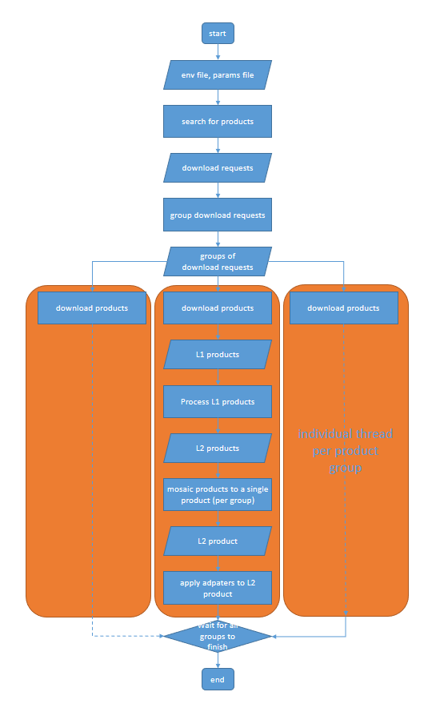

Sencast
{kind=link}
Sencast is a toolbox to download and derive water quality parameters from satellite images. It acts as a framework for the use a variety of processors such as Idepix, Polymer, Sen2Cor and Acolite. It supports ESA satellites Sentinel 2 and Sentinel 3 and USGS satellite Landsat 8.
It is developed and maintained by the SURF Remote Sensing group at Eawag.
Warning
Sencast is under active development. The project team are working towards the release of a stable v1.0, however for the moment this project remains pre-v1.0.
Publications
Installation
To install Sencast, run
git clone https://gitlab.com/eawag-rs/sencast.git
conda env create -f ~/sencast/sencast.yml
Many of the Sencast’S processors reply on SNAP , the SeNtinel Application Platform project, funded by the European Space Agency (ESA) or other 3rd party packages. In order to have access to all of Sencast’s processors follow the installation instructions below in order to correctly configure your environment.
This process will require registering accounts with data providers.
For issues with installation, please contact Daniel Odermatt.
Getting Started
Sencast can be run in two ways:
By calling the
main.pyscript with command line arguments
python main.py -p parameters.ini -e environment.ini
Parameters |
Default |
Description |
|---|---|---|
-t –tests |
False |
run test processing to check setup |
-x –delete_tests |
False |
delete previous test run |
-p –parameters |
Required |
link to the parameters.ini file (required except for tests) |
|
${machine-name}.ini |
link to the environment.ini file |
-d -–downloads |
1 |
number of parallell downloads |
-p –processors |
1 |
number of parallell processors |
-a –adapters |
1 |
number of parallell adapters |
By importing Sencast as a function
import sys
sys.path.append("/sencast") # Path to sencast repository
from main import sencast
sencast(params_file, env_file=None, max_parallel_downloads=1, max_parallel_processors=1, max_parallel_adapters=1)
For this options you can pass objects as the params_file and env_file as well as links to the text files.
Following flow chart illustrates how Sencast works.
{kind=link}
Environment File
Environment files use the INI format and contain the configuration of the machine on which Sencast runs. Refer to Environment File for details on how to set up your own environment file.
You should create your own environment file for every machine you install Sencast on.
Parameter File
Parameter files use the INI format and contain the parameters for one execution of Sencast. Refer to Parameter File for details on how to set up your own parameter file.
Perimeter Definition
Perimeter definitions define a geographic area to be processed by Sentinel Hndacast. They are stored as polygons in WKT files, which are referenced from the parameter files. Some example perimeters are stored in the wkt folder.
Processors
Data is processed by a sequence of processors defined in the parameters file. Subsequent processors have all outputs of preceding processors available and might process these outputs further. The user is responsible to ensure that he specifies the processors in the parameters file in the correct order.
Adapters
The purpose of an adapter is to perform some action after the processors have finished. Possible actions include but are not limited to validating outputs, sending processed outputs to some webservice, creating quicklooks, notifying some webservice about the finished sencast run.
Adapter usually do not produce any new output products.
Testing
To test your installation run:
cd ~/sencast
conda activate sencast
python main.py -t
This will report which processors are successfully installed and producing meaning-full outputs.
Installation
Configuration
Sencast
Utilities
Processors
Adapters
DIAS API's